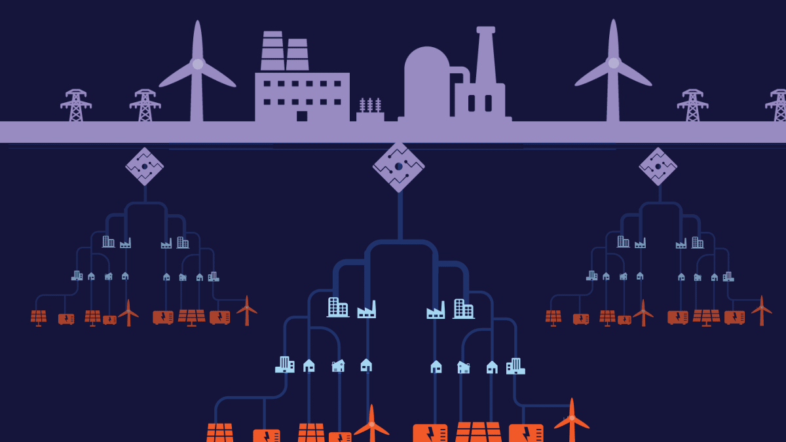
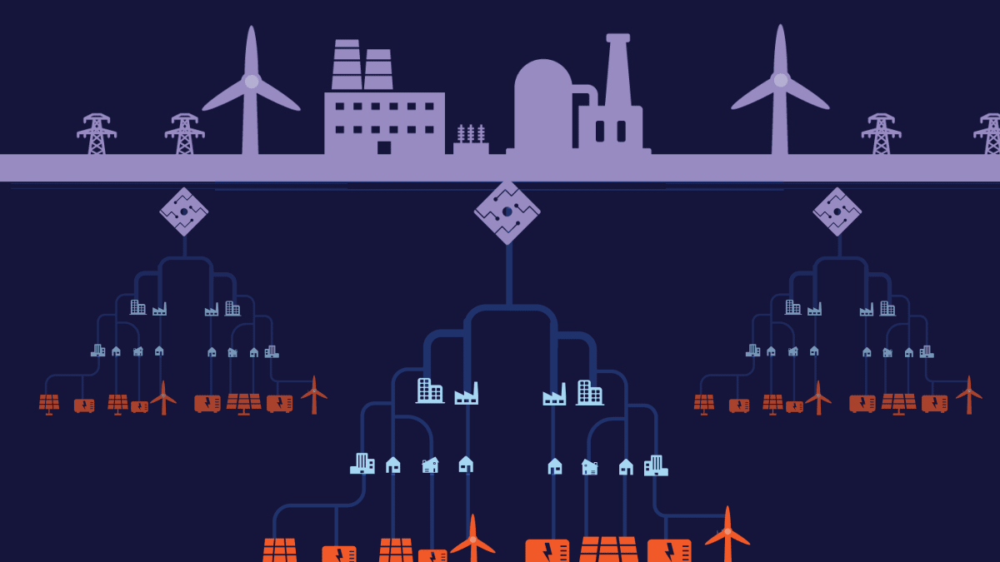

In today’s world we need to mark our goals towards greater energy efficiency,reduced environmental impacts and wiser use of renewable resources. Solar power along with wind are clean sources of energy which need to be used in such a way that we are less dependent on non-renewable sources such as coal, petroleum and nuclear. Here we create a microgrid where we make use of the natural energy sources such as wind and solar to produce power that can be utilized to turn on low wattage load equipment. In addition to that we integrate our microgrid with IoT (Internet of things) so the user can switch the power consumed from microgrid to utility when high wattages are consumed as load. In addition, using IoT we can have real time analytics. Further details will be demonstrated in the report.
 

A microgrid is a local energy grid with control capability, which means it can disconnect from the utility grid and operate autonomously known as islanding. It can also be defined as an interconnection of distributed energy sources and loads
with a clearly defined electrical boundaries. The grid connects homes, businesses and other buildings to central power sources, which allow us to use appliances, heating/cooling systems and electronics. A microgrid can be powered by renewable resources like solar panels, wind turbines, batteries, and/or distributed generators. Depending on how it’s fueled and how its requirements are managed, a microgrid might run indefinitely. A microgrid not only provides backup for the grid in case of emergencies, but can also be used to cut costs, or connect to a local resource that is too small or unreliable for traditional grid use. A microgrid allows communities to be more energy independent, resilient and reliable, in some cases, more environmentally friendly.
It consists of two power sources: 1) Main Grid (120V/60Hz), 2) Renewable Energy Sources (Solar/Wind/Geothermal etc.). Charge stored in the battery is supplied to load using inverter to make it to alternating current. Both the sources are connected to the main panel board using an Automatic Change Over Switch (2 Phase, 63A). A Relay (20A) is used to turn off the main grid supply to the Automatic Change over Switch. In the panel connection, renewable energy power source connection will be excluded to power the heavy load equipment (Kitchen/Laundry/Air Condition etc.). Heavy load equipment will always be powered from the main grid.
Raspberry Pi is used to monitor and control the system. An analog current sensor is connected to hot wire of incoming main grid power supply to calculate the load consumption. An Arduino is connected between the current sensor and the
raspberry pi to the make the analog output of the current sensor to digital input to the Pi. A charge monitoring sensor (INA219) for the sensing the battery charge. Raspberry Pi is connected to the internet via ethernet cable or a Wi-Fi. The input data sensed by the Raspberry Pi is transferred to the Amazon Web Service (AWS) server via internet. Data’s are stored in the Amazon S3 Bucket (Simple Storage Service) the public cloud storage resource available in AWS. User can analyze the data through website and SMS.